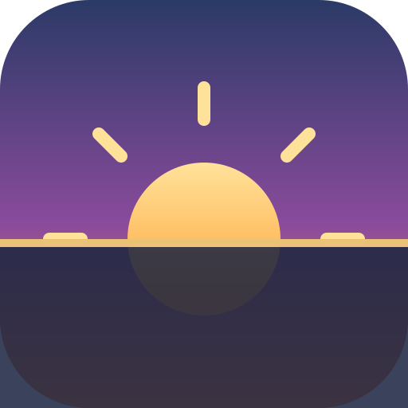

<!doctype html>
<html lang="en">
	<head>
		<meta charset="utf-8" />
		<meta name="viewport" content="width=device-width, initial-scale=1, viewport-fit=cover" />
		<meta name="theme-color" content="#0b1020" />
		<meta
			name="description"
			content="Keyless sunrise, sunset, twilight and golden-hour times with a live sky visualisation, for anywhere on Earth."
		/>
		<title>Solaris — Sunrise &amp; Sunset</title>
		<link rel="icon" href="icon.svg" type="image/svg+xml" />
		<link rel="apple-touch-icon" href="icon.svg" />
		<link rel="manifest" href="manifest.webmanifest" />

		<script src="https://cdn.tailwindcss.com"></script>
		<script>
			tailwind.config = {
				darkMode: 'class',
				theme: {
					extend: {
						fontFamily: {
							sans: ['ui-sans-serif', 'system-ui', 'Inter', 'Segoe UI', 'sans-serif'],
							mono: ['ui-monospace', 'SFMono-Regular', 'Menlo', 'monospace']
						}
					}
				}
			};
		</script>
		<style>
			:root {
				color-scheme: light dark;
			}
			html,
			body,
			#root {
				height: 100%;
			}
			body {
				margin: 0;
				-webkit-tap-highlight-color: transparent;
			}
			/* The page background is the "sky" — it transitions as the day does. */
			#sky-bg {
				position: fixed;
				inset: 0;
				z-index: -1;
				transition: background 1.2s ease;
			}
			@keyframes sunGlow {
				0%,
				100% {
					filter: drop-shadow(0 0 6px rgba(255, 214, 140, 0.7));
				}
				50% {
					filter: drop-shadow(0 0 16px rgba(255, 214, 140, 0.95));
				}
			}
			.sun-disc {
				animation: sunGlow 4s ease-in-out infinite;
				transition:
					cx 60s linear,
					cy 60s linear;
			}
			@keyframes floatUp {
				from {
					opacity: 0;
					transform: translateY(10px);
				}
				to {
					opacity: 1;
					transform: translateY(0);
				}
			}
			.rise {
				animation: floatUp 0.5s ease both;
			}
			@media (prefers-reduced-motion: reduce) {
				.sun-disc,
				.rise {
					animation: none !important;
				}
			}
		</style>

		<script crossorigin src="https://unpkg.com/react@18/umd/react.production.min.js"></script>
		<script crossorigin src="https://unpkg.com/react-dom@18/umd/react-dom.production.min.js"></script>
		<script src="https://unpkg.com/htm@3.1.1/dist/htm.umd.js"></script>
	</head>
	<body class="font-sans text-slate-900 dark:text-slate-100">
		<div id="sky-bg"></div>
		<div id="root"></div>

		<script>
			/* =====================================================================
			 * Solaris — a keyless, self-contained sunrise & sunset PWA.
			 * Three clearly separated layers (issue #1, story 71):
			 *   1. astronomy engine  (SunCalc, on-device, no API key)
			 *   2. location layer    (OpenStreetMap Nominatim, no API key)
			 *   3. presentation      (React components below)
			 * ===================================================================== */
			const { useState, useEffect, useRef, useMemo, useCallback } = React;
			const html = htm.bind(React.createElement);

			/* ---------- 1. Astronomy engine ------------------------------------
			 * SunCalc by Vladimir Agafonkin — https://github.com/mourner/suncalc
			 * (BSD-2-Clause). Inlined so the core experience needs no network and
			 * no API key: everything is computed from coordinates + date on-device.
			 */
			const SunCalc = (function () {
				const PI = Math.PI,
					rad = PI / 180,
					dayMs = 864e5,
					J1970 = 2440588,
					J2000 = 2451545,
					e = rad * 23.4397;
				const toJulian = (d) => d.valueOf() / dayMs - 0.5 + J1970;
				const fromJulian = (j) => new Date((j + 0.5 - J1970) * dayMs);
				const toDays = (d) => toJulian(d) - J2000;
				const ra = (l, b) =>
					Math.atan2(Math.sin(l) * Math.cos(e) - Math.tan(b) * Math.sin(e), Math.cos(l));
				const dec = (l, b) =>
					Math.asin(Math.sin(b) * Math.cos(e) + Math.cos(b) * Math.sin(e) * Math.sin(l));
				const azimuth = (H, phi, d) =>
					Math.atan2(Math.sin(H), Math.cos(H) * Math.sin(phi) - Math.tan(d) * Math.cos(phi));
				const altitude = (H, phi, d) =>
					Math.asin(Math.sin(phi) * Math.sin(d) + Math.cos(phi) * Math.cos(d) * Math.cos(H));
				const siderealTime = (d, lw) => rad * (280.16 + 360.9856235 * d) - lw;
				const solarMeanAnomaly = (d) => rad * (357.5291 + 0.98560028 * d);
				const eclipticLongitude = (M) => {
					const C = rad * (1.9148 * Math.sin(M) + 0.02 * Math.sin(2 * M) + 0.0003 * Math.sin(3 * M));
					return M + C + rad * 102.9372 + PI;
				};
				const sunCoords = (d) => {
					const M = solarMeanAnomaly(d),
						L = eclipticLongitude(M);
					return { dec: dec(L, 0), ra: ra(L, 0) };
				};
				function getPosition(date, lat, lng) {
					const lw = rad * -lng,
						phi = rad * lat,
						d = toDays(date),
						c = sunCoords(d),
						H = siderealTime(d, lw) - c.ra;
					return { azimuth: azimuth(H, phi, c.dec), altitude: altitude(H, phi, c.dec) };
				}
				const times = [
					[-0.833, 'sunrise', 'sunset'],
					[-6, 'dawn', 'dusk'],
					[-12, 'nauticalDawn', 'nauticalDusk'],
					[-18, 'nightEnd', 'night'],
					[6, 'goldenHourEnd', 'goldenHour']
				];
				const J0 = 0.0009;
				const julianCycle = (d, lw) => Math.round(d - J0 - lw / (2 * PI));
				const approxTransit = (Ht, lw, n) => J0 + (Ht + lw) / (2 * PI) + n;
				const solarTransitJ = (ds, M, L) =>
					J2000 + ds + 0.0053 * Math.sin(M) - 0.0069 * Math.sin(2 * L);
				const hourAngle = (h, phi, d) =>
					Math.acos((Math.sin(h) - Math.sin(phi) * Math.sin(d)) / (Math.cos(phi) * Math.cos(d)));
				function getSetJ(h, lw, phi, d, n, M, L) {
					const w = hourAngle(h, phi, d),
						a = approxTransit(w, lw, n);
					return solarTransitJ(a, M, L);
				}
				function getTimes(date, lat, lng) {
					const lw = rad * -lng,
						phi = rad * lat,
						d = toDays(date),
						n = julianCycle(d, lw),
						ds = approxTransit(0, lw, n),
						M = solarMeanAnomaly(ds),
						L = eclipticLongitude(M),
						dc = dec(L, 0),
						Jnoon = solarTransitJ(ds, M, L),
						result = { solarNoon: fromJulian(Jnoon), nadir: fromJulian(Jnoon - 0.5) };
					for (const t of times) {
						const Jset = getSetJ(t[0] * rad, lw, phi, dc, n, M, L);
						result[t[1]] = fromJulian(Jnoon - (Jset - Jnoon));
						result[t[2]] = fromJulian(Jset);
					}
					return result;
				}
				return { getPosition, getTimes };
			})();

			/* ---------- helpers ------------------------------------------------ */
			const DEG = 180 / Math.PI;
			const pad = (n) => String(n).padStart(2, '0');
			const isValid = (d) => d instanceof Date && !isNaN(d);

			// Approximate the location's own local UTC offset. The device's real
			// offset is exact for the user's own place; elsewhere we fall back to a
			// longitude estimate (no timezone API needed — honest and keyless).
			function tzOffsetHours(lng, isDeviceLocal) {
				return isDeviceLocal ? -new Date().getTimezoneOffset() / 60 : Math.round(lng / 15);
			}
			function shift(date, offsetH) {
				return new Date(date.getTime() + offsetH * 3600e3);
			}
			function fmtTime(date, offsetH) {
				if (!isValid(date)) return '—';
				const s = shift(date, offsetH);
				return pad(s.getUTCHours()) + ':' + pad(s.getUTCMinutes());
			}
			function fmtDate(date, offsetH) {
				if (!isValid(date)) return '—';
				return shift(date, offsetH).toLocaleDateString('en-GB', {
					weekday: 'short',
					day: '2-digit',
					month: 'short',
					year: 'numeric',
					timeZone: 'UTC'
				});
			}
			function durationStr(ms) {
				if (ms == null || !isFinite(ms) || ms < 0) return '—';
				const m = Math.round(ms / 60000);
				return Math.floor(m / 60) + 'h ' + pad(m % 60) + 'm';
			}
			function countdownStr(ms) {
				if (ms == null || ms < 0) return '—';
				const s = Math.floor(ms / 1000);
				const h = Math.floor(s / 3600),
					m = Math.floor((s % 3600) / 60),
					sec = s % 60;
				return (h ? h + 'h ' : '') + pad(m) + 'm ' + pad(sec) + 's';
			}
			const DIRS = [
				'N',
				'NNE',
				'NE',
				'ENE',
				'E',
				'ESE',
				'SE',
				'SSE',
				'S',
				'SSW',
				'SW',
				'WSW',
				'W',
				'WNW',
				'NW',
				'NNW'
			];
			function compass(azRad) {
				const deg = (azRad * DEG + 180 + 360) % 360;
				return { deg, label: DIRS[Math.round(deg / 22.5) % 16] };
			}

			/* ---------- 2. Location layer (Nominatim, keyless) ---------------- */
			async function searchPlaces(q) {
				const url =
					'https://nominatim.openstreetmap.org/search?format=jsonv2&limit=6&addressdetails=1&q=' +
					encodeURIComponent(q);
				const res = await fetch(url, { headers: { Accept: 'application/json' } });
				if (!res.ok) return [];
				const data = await res.json();
				return data.map((d) => ({
					name: d.display_name,
					short: d.name || d.display_name.split(',')[0],
					lat: +d.lat,
					lng: +d.lon
				}));
			}
			async function reverseGeocode(lat, lng) {
				const url =
					'https://nominatim.openstreetmap.org/reverse?format=jsonv2&lat=' + lat + '&lon=' + lng;
				try {
					const res = await fetch(url, { headers: { Accept: 'application/json' } });
					const d = await res.json();
					const a = d.address || {};
					const short = a.city || a.town || a.village || a.county || d.name || 'Your location';
					return { name: d.display_name || short, short, lat, lng };
				} catch {
					return { name: 'Your location', short: 'Your location', lat, lng };
				}
			}

			/* ---------- derive everything for a place at "now" ---------------- */
			function derive(place, now) {
				const { lat, lng, isDeviceLocal } = place;
				const offsetH = tzOffsetHours(lng, isDeviceLocal);
				const times = SunCalc.getTimes(now, lat, lng);
				const pos = SunCalc.getPosition(now, lat, lng);
				const altDeg = pos.altitude * DEG;
				const dir = compass(pos.azimuth);

				const dayLength = times.sunset - times.sunrise;
				const nightLength = 864e5 - dayLength;

				// Next sunrise / sunset (roll to tomorrow if both have passed today).
				const events = [
					{ key: 'sunrise', label: 'Sunrise', at: times.sunrise },
					{ key: 'sunset', label: 'Sunset', at: times.sunset }
				].filter((e) => isValid(e.at));
				let next = events.filter((e) => e.at > now).sort((a, b) => a.at - b.at)[0];
				if (!next) {
					const t2 = SunCalc.getTimes(new Date(now.getTime() + 864e5), lat, lng);
					next = { key: 'sunrise', label: 'Sunrise', at: t2.sunrise };
				}

				// Phase → drives the adaptive sky theme and the status chip.
				let phase = 'day';
				const t = now.getTime();
				if (!isValid(times.sunrise) || !isValid(times.sunset)) phase = altDeg > 0 ? 'day' : 'night';
				else if (t < times.dawn || t > times.dusk) phase = 'night';
				else if (t < times.sunrise) phase = 'dawn';
				else if (t < times.goldenHourEnd) phase = 'sunrise';
				else if (t < times.goldenHour) phase = 'day';
				else if (t < times.sunset) phase = 'sunset';
				else phase = 'dusk';

				const isDay = altDeg > -0.833;
				const daylightRemaining = isDay && times.sunset > now ? times.sunset - now : 0;

				return {
					offsetH,
					times,
					pos,
					altDeg,
					dir,
					dayLength,
					nightLength,
					next,
					phase,
					isDay,
					daylightRemaining
				};
			}

			// Compact status for the comparison chips.
			function statusOf(place, now) {
				const d = derive(place, now);
				if (d.phase === 'night' || d.phase === 'dawn' || d.phase === 'dusk')
					return { label: d.phase === 'night' ? 'Night' : 'Twilight', tone: 'night' };
				if (d.phase === 'sunrise' || d.phase === 'sunset')
					return { label: 'Golden hour', tone: 'golden' };
				return { label: 'Daytime', tone: 'day' };
			}

			/* ---------- adaptive sky gradient (story 21, 56) ----------------- */
			const SKY = {
				night: 'linear-gradient(180deg,#070b1c 0%,#0d1330 55%,#141a3a 100%)',
				dawn: 'linear-gradient(180deg,#20264d 0%,#5b4a7d 55%,#c98a5b 100%)',
				sunrise: 'linear-gradient(180deg,#2b3a67 0%,#8a4b9c 45%,#ff9d4d 100%)',
				day: 'linear-gradient(180deg,#2a6ff0 0%,#5aa2f7 55%,#bfe0ff 100%)',
				sunset: 'linear-gradient(180deg,#20264d 0%,#8a3b6c 45%,#ff7a3d 100%)',
				dusk: 'linear-gradient(180deg,#141a3a 0%,#3a2a5d 55%,#7d4a5b 100%)'
			};

			/* ================= presentation components ======================= */

			function Card({ children, className = '' }) {
				return html`<div
					className=${'rise rounded-2xl bg-white/85 dark:bg-slate-900/70 backdrop-blur-md ring-1 ring-black/5 dark:ring-white/10 shadow-xl ' +
					className}
				>
					${children}
				</div>`;
			}

			function Stat({ label, value, sub }) {
				return html`<div className="flex flex-col">
					<div
						className="text-[11px] uppercase tracking-wider text-slate-500 dark:text-slate-400"
					>
						${label}
					</div>
					<div className="text-base font-semibold tabular-nums">${value}</div>
					${sub && html`<div className="text-xs text-slate-500 dark:text-slate-400">${sub}</div>`}
				</div>`;
			}

			// The animated sky + sun/moon scene (stories 4,5,6,16,17,20,21).
			function SkyScene({ d }) {
				const W = 320,
					H = 170,
					horizon = 120,
					cx0 = 30,
					cx1 = W - 30;
				// Sun x from its compass bearing (E→left, W→right); y from altitude.
				const frac = Math.min(1, Math.max(0, (d.dir.deg - 60) / 240));
				const cx = cx0 + frac * (cx1 - cx0);
				const cy = horizon - (Math.max(-8, Math.min(60, d.altDeg)) / 60) * (horizon - 18);
				const belowHorizon = d.altDeg <= -0.833;
				// track arc (dawn → dusk path)
				const arc = `M ${cx0} ${horizon} Q ${W / 2} ${18} ${cx1} ${horizon}`;
				return html`<svg
					viewBox=${'0 0 ' + W + ' ' + H}
					className="w-full h-auto"
					role="img"
					aria-label="Live position of the sun in the sky"
				>
					<defs>
						<linearGradient id="ground" x1="0" y1="0" x2="0" y2="1">
							<stop offset="0" stopColor="#1c2541" stopOpacity="0.85" />
							<stop offset="1" stopColor="#0b1020" stopOpacity="0.95" />
						</linearGradient>
					</defs>
					<path
						d=${arc}
						fill="none"
						stroke="currentColor"
						strokeOpacity="0.25"
						strokeDasharray="3 4"
						className="text-white"
					/>
					${belowHorizon
						? html`<circle
								cx=${cx}
								cy=${Math.max(cy, horizon - 6)}
								r="11"
								fill="#e8edff"
								opacity="0.9"
							/>`
						: html`<circle className="sun-disc" cx=${cx} cy=${cy} r="15" fill="#ffd27a" />`}
					<rect x="0" y=${horizon} width=${W} height=${H - horizon} fill="url(#ground)" />
					<rect x="0" y=${horizon} width=${W} height="2" fill="#ffd27a" opacity="0.7" />
					<text
						x=${cx}
						y=${belowHorizon ? horizon + 20 : Math.max(14, cy - 22)}
						textAnchor="middle"
						className="fill-white"
						fontSize="10"
						opacity="0.85"
					>
						${d.altDeg > 0 ? d.altDeg.toFixed(0) + '° · ' + d.dir.label : d.dir.label}
					</text>
				</svg>`;
			}

			function SearchBar({ onPick, onLocate, locating }) {
				const [q, setQ] = useState('');
				const [items, setItems] = useState([]);
				const [open, setOpen] = useState(false);
				const [busy, setBusy] = useState(false);
				const timer = useRef(null);

				useEffect(() => {
					if (q.trim().length < 3) {
						setItems([]);
						return;
					}
					clearTimeout(timer.current);
					timer.current = setTimeout(async () => {
						setBusy(true);
						try {
							const r = await searchPlaces(q.trim());
							setItems(r);
							setOpen(true);
						} catch {
							setItems([]);
						} finally {
							setBusy(false);
						}
					}, 350);
					return () => clearTimeout(timer.current);
				}, [q]);

				return html`<div className="relative">
					<div className="flex gap-2">
						<div className="relative flex-1">
							<input
								value=${q}
								onInput=${(e) => setQ(e.target.value)}
								onFocus=${() => items.length && setOpen(true)}
								placeholder="Search a city or address…"
								className="w-full h-12 rounded-xl px-4 pr-10 bg-white/90 dark:bg-slate-800/80 ring-1 ring-black/10 dark:ring-white/10 outline-none focus:ring-2 focus:ring-amber-400 placeholder:text-slate-400"
								aria-label="Search a location"
							/>
							${busy &&
							html`<div
								className="absolute right-3 top-3.5 h-5 w-5 rounded-full border-2 border-amber-400 border-t-transparent animate-spin"
							></div>`}
						</div>
						<button
							onClick=${onLocate}
							disabled=${locating}
							title="Use my current location"
							className="h-12 px-4 rounded-xl bg-amber-500 hover:bg-amber-400 text-slate-900 font-medium flex items-center gap-2 disabled:opacity-60"
						>
							${locating ? '…' : '📍'}<span className="hidden sm:inline">My location</span>
						</button>
					</div>
					${open &&
					items.length > 0 &&
					html`<ul
						className="absolute z-20 mt-2 w-full max-h-72 overflow-auto rounded-xl bg-white dark:bg-slate-800 ring-1 ring-black/10 dark:ring-white/10 shadow-2xl"
					>
						${items.map(
							(it, i) => html`<li key=${i}>
								<button
									onClick=${() => {
										onPick(it);
										setOpen(false);
										setQ(it.short);
									}}
									className="w-full text-left px-4 py-2.5 hover:bg-amber-50 dark:hover:bg-slate-700/60 text-sm"
								>
									<span className="font-medium">${it.short}</span>
									<span className="block text-xs text-slate-500 dark:text-slate-400 truncate"
										>${it.name}</span
									>
								</button>
							</li>`
						)}
					</ul>`}
				</div>`;
			}

			function DetailsGrid({ d, place, yesterday, extremes }) {
				const o = d.offsetH;
				const dayDelta = yesterday != null ? Math.round((d.dayLength - yesterday) / 60000) : null;
				const blueStart = d.times.sunset,
					blueEnd = d.times.dusk;
				return html`<${Card} className="p-5">
					<div className="grid grid-cols-2 sm:grid-cols-3 gap-4">
						<${Stat} label="Solar noon" value=${fmtTime(d.times.solarNoon, o)} />
						<${Stat} label="Day length" value=${durationStr(d.dayLength)} />
						<${Stat} label="Night length" value=${durationStr(d.nightLength)} />
						<${Stat}
							label="Civil twilight"
							value=${fmtTime(d.times.dawn, o) + '–' + fmtTime(d.times.sunrise, o)}
							sub=${'Dusk ' + fmtTime(d.times.sunset, o) + '–' + fmtTime(d.times.dusk, o)}
						/>
						<${Stat}
							label="Nautical twilight"
							value=${fmtTime(d.times.nauticalDawn, o) + '–' + fmtTime(d.times.dawn, o)}
						/>
						<${Stat}
							label="Astronomical"
							value=${fmtTime(d.times.nightEnd, o) + '–' + fmtTime(d.times.nauticalDawn, o)}
						/>
						<${Stat}
							label="Golden hour"
							value=${fmtTime(d.times.goldenHour, o) + '–' + fmtTime(d.times.sunset, o)}
							sub="Best light for photos"
						/>
						<${Stat}
							label="Blue hour"
							value=${fmtTime(blueStart, o) + '–' + fmtTime(blueEnd, o)}
						/>
						<${Stat}
							label="Sun altitude"
							value=${d.altDeg.toFixed(1) + '°'}
							sub=${'Bearing ' + d.dir.deg.toFixed(0) + '° ' + d.dir.label}
						/>
					</div>
					${(dayDelta != null || extremes) &&
					html`<div
						className="mt-4 pt-4 border-t border-black/10 dark:border-white/10 text-sm text-slate-600 dark:text-slate-300 space-y-1"
					>
						${dayDelta != null &&
						html`<div>
							Today is
							<strong
								>${dayDelta === 0
									? 'the same length'
									: Math.abs(dayDelta) + ' min ' + (dayDelta > 0 ? 'longer' : 'shorter')}</strong
							>
							than yesterday.
						</div>`}
						${extremes &&
						html`<div>
							Longest day ≈ <strong>${durationStr(extremes.longest)}</strong> · shortest ≈
							<strong>${durationStr(extremes.shortest)}</strong> here.
						</div>`}
					</div>`}
				<//>`;
			}

			function Insights({ d, place }) {
				const o = d.offsetH;
				const tips = [];
				if (d.phase === 'sunrise' || d.phase === 'dawn')
					tips.push('Golden light now — great for photos facing ' + d.dir.label + '.');
				if (d.phase === 'day' && d.daylightRemaining)
					tips.push(durationStr(d.daylightRemaining) + ' of daylight left today.');
				if (d.phase === 'sunset')
					tips.push('Sunset is underway — the blue hour follows for ~30 min.');
				if (d.phase === 'night') tips.push('It is night here. Next sunrise at ' + fmtTime(d.next.at, o) + '.');
				tips.push('Best photography light: golden hour ' + fmtTime(d.times.goldenHour, o) + '–' + fmtTime(d.times.sunset, o) + '.');
				const maps = 'https://www.google.com/maps/search/?api=1&query=' + place.lat + ',' + place.lng;
				return html`<${Card} className="p-5">
					<div className="flex items-center justify-between">
						<h3 className="font-semibold">Smart insights</h3>
						<a
							href=${maps}
							target="_blank"
							rel="noreferrer"
							className="text-sm text-amber-600 dark:text-amber-400 hover:underline"
							>Open in Maps ↗</a
						>
					</div>
					<ul className="mt-3 space-y-2 text-sm text-slate-700 dark:text-slate-200">
						${tips.map((t, i) => html`<li key=${i} className="flex gap-2"><span>•</span><span>${t}</span></li>`)}
					</ul>
				<//>`;
			}

			function Comparison({ places, now, onRemove, onAdd }) {
				const presets = [
					{ short: 'New York', name: 'New York, USA', lat: 40.7128, lng: -74.006 },
					{ short: 'London', name: 'London, UK', lat: 51.5074, lng: -0.1278 },
					{ short: 'Sydney', name: 'Sydney, Australia', lat: -33.8688, lng: 151.2093 },
					{ short: 'Tokyo', name: 'Tokyo, Japan', lat: 35.6762, lng: 139.6503 }
				];
				const tone = {
					day: 'bg-sky-100 text-sky-800 dark:bg-sky-900/50 dark:text-sky-200',
					golden: 'bg-amber-100 text-amber-800 dark:bg-amber-900/50 dark:text-amber-200',
					night: 'bg-indigo-100 text-indigo-800 dark:bg-indigo-900/50 dark:text-indigo-200'
				};
				return html`<${Card} className="p-5">
					<h3 className="font-semibold">Compare around the world</h3>
					<div className="mt-3 flex flex-wrap gap-2">
						${presets.map(
							(p, i) =>
								html`<button
									key=${i}
									onClick=${() => onAdd(p)}
									className="text-xs px-3 py-1.5 rounded-full bg-white/80 dark:bg-slate-800 ring-1 ring-black/10 dark:ring-white/10 hover:ring-amber-400"
								>
									+ ${p.short}
								</button>`
						)}
					</div>
					<div className="mt-4 divide-y divide-black/10 dark:divide-white/10">
						${places.length === 0 &&
						html`<p className="text-sm text-slate-500 dark:text-slate-400">
							Add a few cities to compare their daylight side by side.
						</p>`}
						${places.map((p, i) => {
							const d = derive(p, now),
								st = statusOf(p, now);
							return html`<div key=${i} className="flex items-center gap-3 py-2.5">
								<div className="flex-1 min-w-0">
									<div className="font-medium truncate">${p.short}</div>
									<div className="text-xs text-slate-500 dark:text-slate-400 tabular-nums">
										↑ ${fmtTime(d.times.sunrise, d.offsetH)} · ↓ ${fmtTime(d.times.sunset, d.offsetH)}
									</div>
								</div>
								<span className=${'text-[11px] px-2 py-1 rounded-full ' + tone[st.tone]}>${st.label}</span>
								<button
									onClick=${() => onRemove(i)}
									className="text-slate-400 hover:text-rose-500"
									title="Remove"
								>
									✕
								</button>
							</div>`;
						})}
					</div>
				<//>`;
			}

			function useNow() {
				const [now, setNow] = useState(new Date());
				useEffect(() => {
					const id = setInterval(() => setNow(new Date()), 1000);
					return () => clearInterval(id);
				}, []);
				return now;
			}

			function App() {
				const now = useNow();
				const [place, setPlace] = useState(null);
				const [locating, setLocating] = useState(false);
				const [error, setError] = useState('');
				const [dark, setDark] = useState(
					() =>
						localStorage.getItem('solaris-theme') === 'dark' ||
						(!localStorage.getItem('solaris-theme') &&
							matchMedia('(prefers-color-scheme: dark)').matches)
				);
				const [compare, setCompare] = useState(() => {
					try {
						return JSON.parse(localStorage.getItem('solaris-compare') || '[]');
					} catch {
						return [];
					}
				});
				const [installEvt, setInstallEvt] = useState(null);

				// dark-mode class + persistence
				useEffect(() => {
					document.documentElement.classList.toggle('dark', dark);
					localStorage.setItem('solaris-theme', dark ? 'dark' : 'light');
				}, [dark]);

				useEffect(() => {
					localStorage.setItem('solaris-compare', JSON.stringify(compare));
				}, [compare]);

				// Install prompt (PWA, story 48)
				useEffect(() => {
					const h = (e) => {
						e.preventDefault();
						setInstallEvt(e);
					};
					addEventListener('beforeinstallprompt', h);
					return () => removeEventListener('beforeinstallprompt', h);
				}, []);

				// On first load: try geolocation, else a sensible default.
				useEffect(() => {
					const saved = localStorage.getItem('solaris-place');
					if (saved) {
						try {
							setPlace(JSON.parse(saved));
						} catch {}
					}
					if (navigator.geolocation) locate(true);
					else if (!saved)
						setPlace({
							short: 'London',
							name: 'London, UK',
							lat: 51.5074,
							lng: -0.1278,
							isDeviceLocal: false
						});
					// eslint-disable-next-line
				}, []);

				const choose = useCallback((p) => {
					const full = { ...p, isDeviceLocal: false };
					setPlace(full);
					localStorage.setItem('solaris-place', JSON.stringify(full));
					setError('');
				}, []);

				function locate(silent) {
					if (!navigator.geolocation) {
						if (!silent) setError('Geolocation is not available on this device.');
						return;
					}
					setLocating(true);
					navigator.geolocation.getCurrentPosition(
						async (pos) => {
							const { latitude, longitude } = pos.coords;
							const p = await reverseGeocode(latitude, longitude);
							const full = { ...p, isDeviceLocal: true };
							setPlace(full);
							localStorage.setItem('solaris-place', JSON.stringify(full));
							setLocating(false);
							setError('');
						},
						() => {
							setLocating(false);
							if (!silent) setError('Could not get your location — search for it instead.');
						},
						{ enableHighAccuracy: false, timeout: 8000, maximumAge: 6e5 }
					);
				}

				const d = useMemo(() => (place ? derive(place, now) : null), [place, now]);
				const yesterday = useMemo(() => {
					if (!place) return null;
					const y = SunCalc.getTimes(new Date(now.getTime() - 864e5), place.lat, place.lng);
					return y.sunset - y.sunrise;
				}, [place, Math.floor(now.getTime() / 36e5)]);
				const extremes = useMemo(() => {
					if (!place) return null;
					const yr = now.getUTCFullYear();
					const jun = SunCalc.getTimes(new Date(Date.UTC(yr, 5, 21)), place.lat, place.lng);
					const dec = SunCalc.getTimes(new Date(Date.UTC(yr, 11, 21)), place.lat, place.lng);
					const a = jun.sunset - jun.sunrise,
						b = dec.sunset - dec.sunrise;
					return { longest: Math.max(a, b), shortest: Math.min(a, b) };
				}, [place]);

				// Adaptive sky background.
				useEffect(() => {
					document.getElementById('sky-bg').style.background = d ? SKY[d.phase] : SKY.night;
					const meta = document.querySelector('meta[name=theme-color]');
					if (meta) meta.content = d && d.phase === 'day' ? '#5aa2f7' : '#0b1020';
				}, [d && d.phase]);

				const o = d ? d.offsetH : 0;

				return html`<div className="min-h-full">
					<header
						className="sticky top-0 z-10 backdrop-blur-md bg-black/10 dark:bg-black/20 border-b border-white/10"
					>
						<div className="max-w-3xl mx-auto px-4 h-16 flex items-center justify-between text-white">
							<div className="flex items-center gap-3">
								
								<div className="leading-tight">
									<div className="font-bold tracking-tight">Solaris</div>
									<div className="text-[11px] uppercase tracking-widest opacity-80">
										Sunrise &amp; Sunset
									</div>
								</div>
							</div>
							<div className="flex items-center gap-2">
								${installEvt &&
								html`<button
									onClick=${async () => {
										installEvt.prompt();
										await installEvt.userChoice;
										setInstallEvt(null);
									}}
									className="text-xs px-3 py-1.5 rounded-full bg-white/15 hover:bg-white/25"
								>
									Install
								</button>`}
								<button
									onClick=${() => setDark((v) => !v)}
									className="h-9 w-9 rounded-full bg-white/15 hover:bg-white/25 grid place-items-center"
									title="Toggle light / dark"
									aria-label="Toggle light or dark mode"
								>
									${dark ? '☀️' : '🌙'}
								</button>
							</div>
						</div>
					</header>

					<main className="max-w-3xl mx-auto px-4 py-5 space-y-5">
						<${SearchBar} onPick=${choose} onLocate=${() => locate(false)} locating=${locating} />
						${error && html`<div className="text-sm text-white bg-rose-500/80 rounded-lg px-3 py-2">${error}</div>`}

						${!d
							? html`<${Card} className="p-8 text-center text-slate-500"
									>Finding the sun for you…<//>`
							: html`<div className="space-y-5">
									<${Card} className="p-5 sm:p-6 text-slate-900 dark:text-white">
										<div className="flex items-start justify-between gap-3">
											<div className="min-w-0">
												<h1 className="text-xl sm:text-2xl font-bold truncate">${place.short}</h1>
												<p className="text-sm text-slate-500 dark:text-slate-300 truncate">
													${fmtDate(now, o)}
												</p>
											</div>
											<div className="text-right shrink-0">
												<div className="text-[11px] uppercase tracking-wider text-slate-500 dark:text-slate-300">
													Next ${d.next.label}
												</div>
												<div className="text-2xl font-bold tabular-nums text-amber-500">
													${countdownStr(d.next.at - now)}
												</div>
											</div>
										</div>

										<div className="mt-4"><${SkyScene} d=${d} /></div>

										<div className="mt-4 grid grid-cols-2 gap-4">
											<div className="rounded-xl bg-amber-50 dark:bg-amber-950/40 p-4 text-center">
												<div className="text-3xl">🌅</div>
												<div className="text-[11px] uppercase tracking-wider text-slate-500 dark:text-slate-300">
													Sunrise
												</div>
												<div className="text-2xl font-bold tabular-nums">
													${fmtTime(d.times.sunrise, o)}
												</div>
											</div>
											<div className="rounded-xl bg-orange-50 dark:bg-orange-950/40 p-4 text-center">
												<div className="text-3xl">🌇</div>
												<div className="text-[11px] uppercase tracking-wider text-slate-500 dark:text-slate-300">
													Sunset
												</div>
												<div className="text-2xl font-bold tabular-nums">
													${fmtTime(d.times.sunset, o)}
												</div>
											</div>
										</div>
									<//>

									<${DetailsGrid} d=${d} place=${place} yesterday=${yesterday} extremes=${extremes} />
									<${Insights} d=${d} place=${place} />
									<${Comparison}
										places=${compare}
										now=${now}
										onAdd=${(p) => setCompare((c) => [...c, { ...p, isDeviceLocal: false }])}
										onRemove=${(i) => setCompare((c) => c.filter((_, j) => j !== i))}
									/>
								</div>`}

						<footer className="pt-2 pb-8 text-center text-xs text-white/70">
							Times computed on-device with SunCalc · places from OpenStreetMap Nominatim · no API key
							required.
						</footer>
					</main>
				</div>`;
			}

			ReactDOM.createRoot(document.getElementById('root')).render(html`<${App} />`);

			/* ---------- 3. PWA service worker (stories 15, 48) --------------- */
			if ('serviceWorker' in navigator) {
				addEventListener('load', () =>
					navigator.serviceWorker.register('sw.js').catch(() => {})
				);
			}
		</script>
	</body>
</html>
